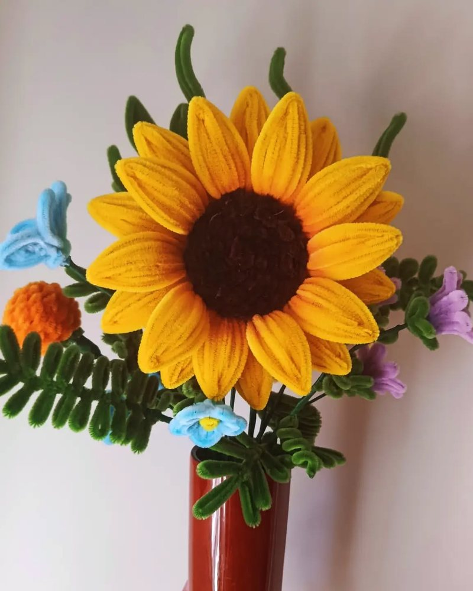
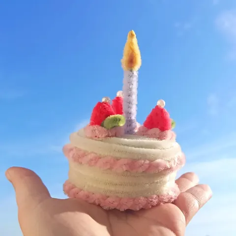

Une idée pour chaque occasion
Noël
Un centre de table qui ne fane pas avant le dessert, un bouquet rouge à glisser sous le sapin : pour Noël, des fleurs éternelles faites main, à offrir ou à garder.
En images


Décorer la table des fêtes
Un centre de table en fil chenille se regarde de toutes les places et ne craint ni la chaleur du repas ni la lumière des bougies. Il se range ensuite pour l’année suivante, ou reste en déco toute l’année.
Des cadeaux à glisser sous le sapin
Roses rouges, bonsaï azalée, théière fleurie, bouquet Rubis : des cadeaux originaux, faits à la main, qui changent des cadeaux habituels. Chaque création est emballée dans une pochette transparente fermée d’un nœud, avec sa carte de vœux offerte.

Commander à temps
En décembre, pensez à commander tôt : chaque fleur est façonnée à la main. Retrait gratuit à l’atelier de Signy-l’Abbaye ou livraison autour de l’atelier.
Mes idées de créations
Les autres occasions
Les fleurs de l’atelier
- Rose en fil chenille
- Tulipe en fil chenille
- Lys en fil chenille
- Gerbera en fil chenille
- Pavot et coquelicot en fil chenille
- Arum en fil chenille
- Hortensia en fil chenille
- Tournesol en fil chenille
- Muguet en fil chenille
- Lavande en fil chenille
- Jonquille en fil chenille
- Marguerite en fil chenille
- Pensée en fil chenille